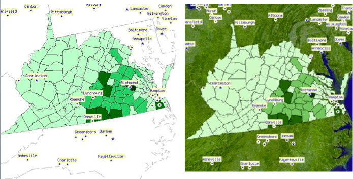
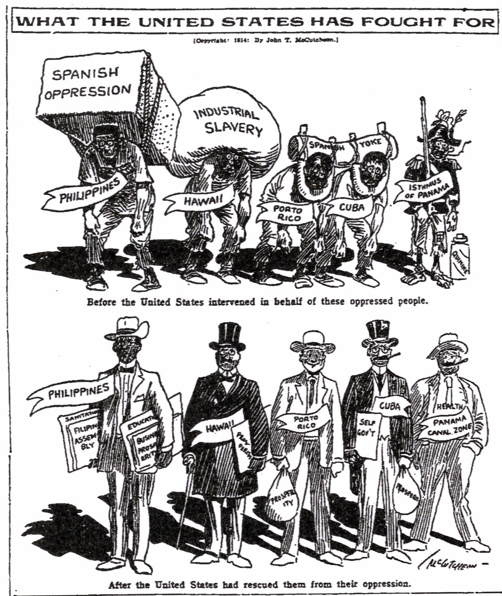
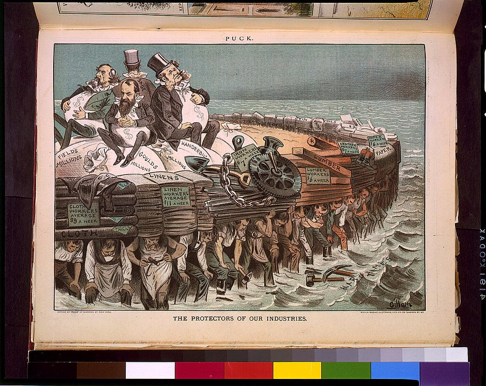

1
Compare the two maps below, and identify the most significant change that took place regarding U.S. expansion between 1840 and 1850.
The images below are openly licensed images, From The National Atlas of the United States of America. Ed. Arch C. Gerlach. Washington, D.C.: U.S. Dept. of the Interior, Geological Survey, 1970. Scanned image provided by Perry-Castañeda Library Map Collection, University of Texas Libraries.
The images below are openly licensed images, From The National Atlas of the United States of America. Ed. Arch C. Gerlach. Washington, D.C.: U.S. Dept. of the Interior, Geological Survey, 1970. Scanned image provided by Perry-Castañeda Library Map Collection, University of Texas Libraries.

Choose one answer.
| a. The U.S. gained Oregon and territory well into Canada. | ||
| b. The U.S. gained the West Coast and all of the Rocky Mountain territories. | ||
| c. Minnesota became a state. | ||
| d. Texas ceded territory back to Mexico. |
Question
2
Fill in the blank. When engaging in the process of writing history, one must first identify an historical problem prior to evaluating evidence and drawing
conclusions. What makes these issues interesting and meaningful is that the topic is ______________.
Choose one answer.
| a. Relevant or related to a contemporary issues | ||
| b. Resolved quickly | ||
| c. Related to periods of war | ||
| d. Researched in a way that proves your convictions or beliefs |
Question
3
Members of the Whig party tended to support which of the following?
Choose one answer.
| a. Tariffs, internal improvements, and the Second National Bank of the United StatesB. States' rights and a compact theory of government | ||
| b. Secession | ||
| c. The secrecy of the Masonic Order in American political culture |
Question
4
Short staple cotton production created wealth and a rise in influence of the cotton planters of the Deep South. Which statement does NOT support this
premise?
Choose one answer.
| a. The Deep South had an abundance of rich soil. | ||
| b. The slave labor system was in place and easily adjusted to cotton production. | ||
| c. Cotton planters received Federal start-up grants and the benefit of protective tariffs to protect their markets. | ||
| d. Cotton was in tremendous demand in the textile mills in Northeastern U.S. and in England. |
Question
5
The Democratic Party grew with the support of which of the following constituents?
Choose one answer.
| a. The New York and Philadelphia business aristocracy | ||
| b. Irish and other immigrants | ||
| c. New England merchants | ||
| d. The clergy and reformers |
Question
6
The map below represents U.S. expansion in 1840. Which of the following statements correctly represents the most accurate conclusion one might draw based
on observations of the map?

Choose one answer.
| a. The Mississippi River was the westernmost border of the United States. | ||
| b. Texas became an American territory at that time. | ||
| c. At least 25% of the map was composed of foreign territory. | ||
| d. One could conclude that American access to the Pacific West Coast was blocked by foreign territories. |
Question
7
The map below shows the numbers of male slaves ages 24-35 living in the Commonwealth of Virginia, according to the U.S. Census in the year 1840. Which of
the following statements can correctly be made regarding the slave population found in the cities based on the information provided on the map?
Virginia Counties in 1840 Male Slaves 24-35 Years of Age.
The images below are openly licensed images provided by University of Virginia Library's Historical Census Browser: "Census Data for Year 1840"

Virginia Counties in 1840 Male Slaves 24-35 Years of Age.
The images below are openly licensed images provided by University of Virginia Library's Historical Census Browser: "Census Data for Year 1840"
Choose one answer.
| a. Charleston had more slaves than Roanoke. | ||
| b. The heaviest concentration of slaves was found in the counties of the south and east. | ||
| c. The state capitol had a slave population between 20096 - 30114. | ||
| d. All surrounding states had freed their slaves by 1840. |
Question
8
The Second Great Awakening happened during the first half of the 19th century and profoundly impacted which of the following?
Choose one answer.
| a. The development of the cotton industry and slavery | ||
| b. The increase in Irish Catholic immigration | ||
| c. The development of powerful social reform movements | ||
| d. The development of Manifest Destiny and the belief that America must annex new lands |
Question
9
The Whig Party was composed of a number of coalitions who did which of the following?
Choose one answer.
| a. Bitterly opposed the Second Bank of the United States | ||
| b. Came to support the states' rights policies of Andrew Jackson | ||
| c. Opposed the impositions of Federal tariffs | ||
| d. Opposed the presidency of Andrew Jackson |
Question
10
Transcendentalism involved which of the following beliefs?
Choose one answer.
| a. One can commune with God through nature. | ||
| b. One must learn to belong to a church or organized religion. | ||
| c. Humans learn to advance through the laws and authority of men. | ||
| d. Transcendentalists rejected the Romantic Movement and its ideas. |
Question
11
When doing historical research, which of the following should one consider when dealing with facts and resources?
Choose one answer.
| a. Secondary sources are more reliable than primary sources. | ||
| b. Primary sources can be trusted to provide information based on the opinion of historians. | ||
| c. Historians and history students must have the knowledge of locating history sources and ability to correctly cite sources. | ||
| d. The writer may use the facts and resources in any way he or she chooses to express the political opinion of the writer. |
Question
12
Which of the following examples is not a primary source?
Choose one answer.
| a. Newspaper articles | ||
| b. A well-documented book by a respected historian | ||
| c. A speech | ||
| d. A journal or diary |
Question
13
Which of the following resources should be categorized as a "secondary source?"
Choose one answer.
| a. A letter from a Congressman to a Senator | ||
| b. Unpublished manuscripts | ||
| c. Maps and artwork | ||
| d. A book in which one can learn about arguments surrounding a certain topic |
Question
14
Which of the following statements is not correctly associated with living conditions between the 1830s and the 1840s in New York City?
Choose one answer.
| a. Immigrants prospered and found working conditions more favorable than what they left in Europe. | ||
| b. Although work was plentiful, hours were longer and work output was more demanding. | ||
| c. The disparity between the affluent and the poor increased greatly. | ||
| d. Rapid urban growth led to disease and unsanitary conditions in the streets. |
Question
15
Americans developed interest in the West through which of the following?
Choose one answer.
| a. The discovery of gold in Texas | ||
| b. Mass Anglo-American settlements in Texas and settlements in the Oregon Country by missionaries and farmers | ||
| c. The growing popularity of San Francisco as a warm summer resort location | ||
| d. The need for plantation lands due to rapid soil depletion in the Deep South due to cotton agricultural practices |
Question
16
During the 1830s through the 1850s, native-born Americans organized to react against massive immigration by doing which of the following?
Choose one answer.
| a. Creating the "Know Nothings" and the "American Party" | ||
| b. Opposing immigrants from voting or running for public office | ||
| c. Claiming that immigrant culture and Catholic and/or Lutheran religious beliefs threatened American society | ||
| d. All of the above |
Question
17
Especially before the 1840s, how was the "frontier" defined?
Choose one answer.
| a. Largely in Euro-centric terms | ||
| b. As a possible Mormon refuge from attacks and lynching by Irish immigrants | ||
| c. As a place the place that was rich in mineral deposits and natural resources | ||
| d. All of the above |
Question
18
In 1845, which event caused the displacement of millions of Irish people?
Choose one answer.
| a. The Potato Blight | ||
| b. The crushing defeat of the Irish Republican Army at the hands of the British in Belfast | ||
| c. The discovery of gold in California | ||
| d. A drop in Ireland's currency followed by a terrible depression |
Question
19
Sectional conflict arose in Congress when David Wilmot amended an arms appropriation bill by adding a proviso that did which of the following?
Choose one answer.
| a. Called for an immediate end of all hostilities with Mexico | ||
| b. Called for preventing the establishment of slavery in the territories acquired from Mexico | ||
| c. Called for new protective tariffs to for Northern industrial from Mexican imported manufactured goods | ||
| d. Stated that California should enter the Union as a free state before any other business can be considered |
Question
20
Starting in the 1830s, Americans began to react to the immigration of people from which location, and why?
Choose one answer.
| a. France due to the revolution | ||
| b. Mexico due to political repression | ||
| c. Ireland due to extreme poverty | ||
| d. England due to a devastating depression |
Question
21
The Mexican-American War caused which of the following?
Choose one answer.
| a. American public opinion reportedly gave 100% support for the troops and their war objectives. | ||
| b. Southerners opposed the war due to their belief in states' rights. | ||
| c. Sectional tensions arose in 1846 and ran through 1850. | ||
| d. Henry Thoreau issued an apology for supporting the war. |
Question
22
What European ethnic group began massive immigration to America, and why?
Choose one answer.
| a. The Germans due to a failed democratic revolution | ||
| b. The Italians due to war with the pope over independence | ||
| c. The Russians due to repression from Czar Nicholas | ||
| d. Jews from all over Europe due to economic opportunity and religious freedom |
Question
23
Which of the following statements about Juan Seguin, a Tejano who fought against Santa Anna in support of the Texas Revolution, is true?
Choose one answer.
| a. He formed a Texas Ranger outfit for the opportunity to fight against Santa Anna in the Mexican-American War. | ||
| b. He supported President Polk in annexation of Texas and America's entry into the war. | ||
| c. He felt betrayed, alienated, and chose to fight against U.S. military aggression by supporting Santa Anna. | ||
| d. He opposed U.S. military aggression, immigrated to Argentina, and established himself as a cattle baron. |
Question
24
Which of the following statements about Southern leaders like John C. Calhoun is true?
Choose one answer.
| a. Southern leaders believed Free Soilers were behind the start of the Mexican-American War. | ||
| b. Southern leaders offered slaves the possibility of freedom if they would enlist in the army and fight in the war. | ||
| c. Southern leaders considered the war nothing more than a conspiracy between bankers and wealthy real estate speculators. | ||
| d. Southern leaders considered the war as an opportunity to expand slavery. |
Question
25
Which of the following statements about the Free Soil Party is true?
Choose one answer.
| a. The Free Soil Party was composed mainly of Democrats who opposed the expansion of slavery into the territories gained from Mexico. | ||
| b. The Free Soil Party was an anti-slavery party that pushed for the immediate abolition of slavery. | ||
| c. The Free Soil Party failed to get any real support due to their radical distrust of government and belief in states' rights politics. | ||
| d. The Free Soil Party came out against reform politics as government imposed tyranny on the lives of citizen patriots. |
Question
26
Which of the following statements correctly describes the development in the South from 1820 through 1860?
Choose one answer.
| a. The South desperately tried to industrialize and build cities with immigrant labor. | ||
| b. Cotton production dramatically increased to dominate the economic interests of planters, politicians, and all aspects of society in the Antebellum South. | ||
| c. Mexican immigration increased and dominated the agricultural society in the South. | ||
| d. Northern abolitionists became popular in the urban areas of the North. |
Question
27
Which of the following statements identifies the position of Abraham Lincoln and many Northern Whigs regarding U.S. entry into the Mexican-American War?
Choose one answer.
| a. They considered the Mexican-American War as a conflict that favored Southern slave holding interests. | ||
| b. They believed the war wan necessary only after Mexican troops burned Atlanta. | ||
| c. They brokered a cease fire that took both sides back to their original territorial holdings. | ||
| d. All of the above |
Question
28
Which of the following statements regarding the term "Manifest Destiny" is true?
Choose one answer.
| a. It embodied the very meaning of American expansionist principles. | ||
| b. It inspired Charles G. Finney and the Evangelicals to engage in the Second Great Awakening. | ||
| c. It comforted and inspired abolitionists to believe that divine help would abolish slavery. | ||
| d. It convinced Americans that they lived in a godly and democratic nation. |
Question
29
Zebulon Montgomery Pike is credited for which of the following?
Choose one answer.
| a. Showing Moses Austin the location of Texas | ||
| b. Identifying the Great Plains and much of the West as the "Great American Desert" | ||
| c. Climbing and naming Pike's Peak in the Sierra Mountains in California | ||
| d. Selling Jefferson on the idea of buying the Louisiana Purchase |
Question
30
As chief executive, James Buchannan is credited with which of the following?
Choose one answer.
| a. Urging public support of the Dred Scott Decision, knowing from the Court Justices that the South won the decision | ||
| b. Telling Congress to admit Kansas as a slave state | ||
| c. Expressing that the states had sole authority in the slavery issue and that people of the North are not more responsible and have no more right to interfere than Russia or in Brazil | ||
| d. All of the above |
Question
31
As the states of the Deep South seceded, they decided to meet in Birmingham in February 1861 to do which of the following?
Choose one answer.
| a. Create a government based on principles of confederation and states' rights | ||
| b. Send ambassadors to Mexico with the hope of gaining financial support | ||
| c. Invite Northern states to secede along with them | ||
| d. Decide how to best use their gold reserves in Texas |
Question
32
Between 1820 and 1860, in the North in the U.S., a world view developed that included which of the following?
Choose one answer.
| a. Support for slavery only if involved production of cotton for New England textile mills | ||
| b. The belief in the need for tight regulation of society | ||
| c. A labor system based on hourly wages and hope for success | ||
| d. A turn away from large factories dominated by women and child laborers |
Question
33
By 1860, where did the majority of the nearly four million slaves in the South work?
Choose one answer.
| a. On tobacco plantations | ||
| b. In the city, where their masters rented them out to do day labor for whites who could not afford to own slaves | ||
| c. On cotton plantations | ||
| d. In the newly established factories located in the quickly growing urban areas of the South |
Question
34
By the 1850s, American society had been impacted by slavery in which of the following ways?
Choose one answer.
| a. The defense of slavery had provided an identity for the South and uniqueness in its social system. | ||
| b. Slavery and the defense of slavery prompted the development of Southern colleges unique from Northern colleges. | ||
| c. Slavery and the debate over slavery caused institutions and church organizations to divide: Southern Baptists. | ||
| d. Slavery impacted American society in all of these ways and many more as the North and South headed toward secession and civil war. |
Question
35
By the time America reached 1850, many conditions increased sectional tension over the expansion of slavery between free Northern states and the
pro-slavery states of the South. Which of the following conditions did not raise the tensions of 1850?
Choose one answer.
| a. Territories taken from Mexico were petitioning to enter the Union. | ||
| b. Southerners embraced Calhoun's theories of compact government and nullification. | ||
| c. Cotton production increased so that "King Cotton" became America's leading product. | ||
| d. Northern industry produced powered farm equipment that replaced slave labor and depressed the value of slaves owned by Southern whites. |
Question
36
Fill in the blank. By early 1850, politicians from free Northern states and the pro-slavery Southern states established a long series of compromises over
slavery and the balance of political power. The politicians credited the _____________ as the paradigm or benchmark for compromise.
Choose one answer.
| a. Dred Scott Decision | ||
| b. Bill of Rights | ||
| c. The Compromise of 1833 | ||
| d. Missouri Compromise |
Question
37
George Fitzhugh made which of the following statements regarding slavery in the South in his well known writing "The Universal Law of Slavery?"
Choose one answer.
| a. ". . . the Negro is but a grown up child, and must be governed as a child." | ||
| b. ". . . the Negro race is inferior to the white race, and living in their midst, they would be far outstripped or outwitted in the chaos of free competition." | ||
| c. "We would remind those who deprecate and sympathize with negro slavery, that his slavery here relieves him from a far more cruel slavery in Africa, or from idolatry and cannibalism, and every brutal vice and crime that can disgrace humanity; and that it Christianizes, protects, supports and civilizes him; that it governs him far better than free laborers at the North are governed." | ||
| d. All of the above |
Question
38
Hoping to prevent a civil war, Senator John J. Crittenden of Kentucky, proposed a number of measures for compromise, which included constitutional
amendments to give protection to slavery and to revive the Missouri Compromise and draw the 36-30 line. Lincoln responded by saying which of the following?
Choose one answer.
| a. No, there will be no compromise over slavery. | ||
| b. Yes, but the agreement must be renegotiated upon his reelection in 1864. | ||
| c. No, he was deeply religious and slavery offended his religious convictions. | ||
| d. Yes, but only if slaves would be able to be emancipated on their 30th birthday. |
Question
39
How did passage of the Kansas-Nebraska Act affect the American political situation in the 1850s?
Choose one answer.
| a. Franklin Pierce supported Southerners on the corrupt Kansas elections and the pro-slavery. | ||
| b. Winfield Scott was elected, and he advocated sending army units to protect southerners from slave revolts. | ||
| c. Millard Fillmore proposed annexing Cuba and developing cotton production there. | ||
| d. James Buchanan refused to use military power to stop secessionists in Southern California. | ||
| e. It repealed the Missouri Compromise and called for the citizens of the new territory to use popular sovereignty to resolve the slavery issue. | ||
| f. It established that all slaves in the territory would be emancipated on their 30th birthday. | ||
| g. It made slaveholding residents in Missouri feel more secure in knowing that Kansas was no longer unorganized Indian Territory. | ||
| h. It assured the Free Soilers that slavery would not expand beyond the South. |
Question
40
Identify the correct statement regarding labor and conditions for slaves on plantations and slaves living in the urban South?
Choose one answer.
| a. It differed very little from one to the other. | ||
| b. Urban slaves had more freedom, better food, and better living conditions than slaves working on plantations. | ||
| c. Urban slaves were more regulated due to the availability of police departments, sheriff's department, and numerous members of the volunteer slave patrol organizations. | ||
| d. Plantation slaves were trained as skilled laborers, while urban slaves were used only for labor involving unskilled work. |
Question
41
In December 1860, South Carolina seceded because which of the following events had taken place?
Choose one answer.
| a. All other states in the Deep South pledged they would follow South Carolina's lead and secede by January 1, 1861. | ||
| b. Lincoln won the election for the presidency. | ||
| c. A number of protective tariffs appeared to have the votes needed to pass in Congress. | ||
| d. Foreign powers pledged financial and military support if the cotton producing South would leave the Union. |
Question
42
On April 12, 1861, why did Confederates in South Carolina open fire on Fort Sumter?
Choose one answer.
| a. Lincoln ordered marines to attack Charleston, because Sumter is in Charleston harbor. | ||
| b. Confederates wanted to demonstrate the power and accuracy of their artillery against a Union Fort. | ||
| c. Lincoln sent a fleet of supply ships to resupply Fort Sumter for another two years and thereby threaten Confederate shipping. | ||
| d. Sumter was the last fort that had not surrendered in the South and South Carolina considered a "foreign" fort in Charleston harbor as a blow to their Southern honor. |
Question
43
The Compromise of 1850 caused a brief period of euphoria in America. That was quickly destroyed due to a series of events that produced causes (which
usually produced more actions and consequences). There are four sets of causes and consequences (causes and effects) listed below. Which of the four sets
is incorrectly paired?
Choose one answer.
| a. The Fugitive Slave Law led to Harriet Beecher Stowe to write Uncle Tom's Cabin in reaction. | ||
| b. The growing belief in secession led to the creation of the Republican Party in support of that issue. | ||
| c. The passage of the Kansas-Nebraska Acts led to the disintegrations of the Whig Party over the failure to deal with slavery. | ||
| d. The corrupt election and the outbreak of violence associated with "Bleeding Kansas" led to the downfall of "Popular Sovereignty" as an answer to slavery. |
Question
44
The Compromise of 1850 dealt with a number of issues that were tied to the sectional crisis involving slavery and the balance of power between Northern
States (free states) and Southern States (slave states). Which of the following was NOT an issue facing lawmakers regarding issues associated with the
Compromise of 1850?
Choose one answer.
| a. Pressure from Free Soilers to ban all slavery in the territories | ||
| b. The ban of slavery in Washington D.C. | ||
| c. The issue of run-away slaves | ||
| d. Federal funds to assist Indian tribal groups in starting their own industrial development |
Question
45
The Kansas elections of November 1854 and March 1855 led to all of the following events EXCEPT:
Choose one answer.
| a. Thousands of armed Missouri residents crossed the border and illegally voted for a proslavery government. | ||
| b. President Pierce stepped in to prevent the establishment of the proslavery government due election irregularities. | ||
| c. Both a proslavery government in Lecompton, Kansas and a Free Soil government in Lawrence, Kansas claimed to be the legitimate government. | ||
| d. Starting in 1856, months of bloody conflict occurred between proslavery settlers and Free Soilers became known as "Bleeding Kansas." |
Question
46
When Lincoln learned of the surrender of Sumter, he did which of the following?
Choose one answer.
| a. Called for the surrender of the fort to U.S. forces thereby causing the other Southern states to secede | ||
| b. Called up 75,000 volunteers from state militias to invade and put down the revolt, thus causing the states of the Upper South to secede on support of Southern solidarity | ||
| c. Hired German mercenaries to invade and retake the Southern states | ||
| d. Called for an immediate response by strategically positioning U.S. Navy attack vessels and submarines |
Question
47
Which of the following events raised anxiety among Southerners regarding the institution of slavery?
Choose one answer.
| a. Southerners fought to resume the more profitable international slave trade. | ||
| b. Slave revolts in Haiti and in other foreign lands raised fear that slaves imported from those regions might instigate slave revolts in the United States; it was thus a security risk. | ||
| c. The Second Great Awakening influenced American slave owners to liberate their slaves on Christian ethical grounds. | ||
| d. Southerners supported and encouraged free blacks to buy slaves and grow cotton in order to demonstrate that everyone could enjoy the benefits of slave ownership. |
Question
48
Which of the following is an accurate difference between the views of Northerners and Southerners in the years before the Civil War?
Choose one answer.
| a. Southerners tended to oppose "modernism" as corruption by commercialism, industrialists, and financial institutions while the North promoted this by encouraging investment and rolling over profits for reinvestment. | ||
| b. Southern elites tended to be suspicious of the spread of literacy, while Northerners encouraged the spread of literacy. | ||
| c. Southern leaders tended to support reform and saw democracy as a threat to the hierarchy, but Northerners believed that democracy led to anarchy. | ||
| d. All of the above |
Question
49
Which of the following is NOT associated with the politics, landmark judicial cases, and civil violence associated with the late 1850s?
Choose one answer.
| a. John Brown and his sons raided a federal arsenal to gain weapons for planned slave revolts. | ||
| b. Preston Brooks attacked Senator Charles Sumner in the Senate over Kansas related speeches made by Sumner. | ||
| c. The Dred Scott decision took all legal status from African Americans, declared the Missouri Compromise illegal, and opened the door for the expansion of slavery. | ||
| d. Lincoln defeated Douglas in the presidential race in 1858 due to his showing in the famous debates held in New York. |
Question
50
Which of the following is NOT associated with the Election of 1860?
Choose one answer.
| a. Four parties nominated four candidates who represented separate sectional interests. | ||
| b. The heaviest population in the U.S. was clearly in the Northern States. | ||
| c. Lincoln won a majority of popular and electoral votes. | ||
| d. During the campaign, Lincoln opposed the expansion but not the abolition of slavery in attempt to calm Southern slaveholders. |
Question
51
Which of the following statements was NOT associated with the Missouri Compromise of 1820?
Choose one answer.
| a. Maine entered the Union as a free state. | ||
| b. Slavery could be established north of 36 degrees - 30 minutes north latitude (the 36-30 line). | ||
| c. Missouri entered the Union as a free state. | ||
| d. Slaves who served in the military were offered freedom below the 36 - 30 line. |
Question
52
Which of the following was NOT associated with changes in New England factories from 1830 to 1860?
Choose one answer.
| a. Fewer native born women willing to work in the textile mills | ||
| b. A deterioration of the working conditions in the mills | ||
| c. The development of an industrial class composed of women immigrants from Ireland | ||
| d. The development of national unions with the ability to effectively coordinate strikes |
Question
53
Confederate goals associated with "Cotton Diplomacy" resulted in which of the following, and why?
Choose one answer.
| a. Complete failure due to a Union naval blockade of the Confederate coastline | ||
| b. Complete failure because the U.S. Navy had captured top Confederate officials and sensitive documents | ||
| c. Limited success because the Navy was unable to stop Confederate trade with Mexico | ||
| d. Success because the English were running short of cotton for their textile mills |
Question
54
Confederate military objectives included which of the following?
Choose one answer.
| a. Fighting a defensive war to rid themselves of a foreign military power in their country | ||
| b. Having talks in Philadelphia or Washington D.C. to end the war | ||
| c. Taking additional territory through successful deployment of the Army of Northern VA | ||
| d. Developing new technologies for advanced warfare |
Question
55
Events happened quickly in April 9, 1865 and April 14, 1865 as the American public experienced which of the following events?
Choose one answer.
| a. Lee fled to Mexico, and Lincoln made clear that reconciliation would be the goal of his post war policies with the South. | ||
| b. Lee surrendered to Sherman at Atlanta and carried out a destructive march to Savannah. | ||
| c. Sheridan was reassignment as military commander of Texas, and within a day he publicly stated that if he owned Texas and Hell, he would live in Hell and rent out Texas. | ||
| d. Lee surrendered at Appomattox, and popular actor and Confederate agent, John Wilkes Booth, assassinated Lincoln. |
Question
56
How did Confederates and Federals address the issue of financing the war?
Choose one answer.
| a. Confederates printed paper money. | ||
| b. The Confederacy allowed each state to print their own money. | ||
| c. Federals sold bonds, raised personal taxes, drew on gold reserves, and printed "greenbacks" dollars. | ||
| d. All of the above |
Question
57
In 1864, Lincoln decided upon a new strategy to end the war. This led to which of the following?
Choose one answer.
| a. Grant was made commanding general of all Union armies. | ||
| b. Grant targeted the Army of Northern Virginia and constantly moved against Lee in bloody battles at The Wilderness, Cold Harbor, and Spotsylvania in the Virginia woods. | ||
| c. He assigned William T. Sherman to take Georgia and Phillip Sheridan to the Shenandoah Valley of Virginia for the purpose of causing such destruction so that the civilian population would want an end to the war. | ||
| d. All of the above |
Question
58
Native Americans and the Freedmen contributed to the war effort in which of the following ways?
Choose one answer.
| a. Approximately 186,000 black soldiers served in the Union Army, while most Southern tribes supported the Confederacy. | ||
| b. Blacks were not allowed to receive combat training in the Union Army. | ||
| c. Freedmen fought in fully integrated military units of the Army of the Potomac. | ||
| d. Freedmen were inspired to enlist after Lincoln's Emancipation Proclamation liberated all slaves. |
Question
59
Roughly 620,000 men died in the civil war and many more wound up as amputees. This high casualty rate occurred due to which of the following?
Choose one answer.
| a. The development of muskets that could hit targets at 800 yards | ||
| b. The development of the repeating rifle | ||
| c. The continuation of assault tactics developed during the time of Napoleon | ||
| d. All of the above |
Question
60
The Davis Administration addressed the morality or reason why Confederates fought the war. Vice President Alexander Stephens delivered a speech to the
Confederate Congress and stated which of the following?
Choose one answer.
| a. "Lincoln and the Republican abolitionists insulted the honor of Southern states." | ||
| b. "We are fighting for our personal rights." | ||
| c. "Our new government is founded upon....the great truth, that the negro is not equal to the white man; that slavery--subordination to the superior race--is his natural and normal condition." | ||
| d. "That the time-honored ideas of John C. Calhoun, namely states' rights, must be the greatest priority in the conflict." |
Question
61
The effects of the Confederate and Union home fronts included which of the following?
Choose one answer.
| a. Riots exploding in New York City over the start of a military draft law | ||
| b. Mounting apathy in the North as the war continued | ||
| c. The ability of plantations to turn from cotton production to food production | ||
| d. An ample supply of shoes, wool, and medicine for civilians and the military in the Confederacy |
Question
62
Unlike the success enjoyed by Grant during his 1862 - 1863 campaigns in gaining the Mississippi valley in the West, why was the Army of the Potomac
frustrated in nearly every contest in the Eastern theater of the war?
Choose one answer.
| a. Robert E. Lee and Stonewall Jackson were skilled strategists with a much larger and better-trained army. | ||
| b. The Army of Northern Virginia possessed technologically superior weapons. | ||
| c. The commanding general, George McClellan, acted without caution or concern for the Army of the Potomac. | ||
| d. There was clearly a lack of capable military commanders, a fact established by the number of generals Lincoln hired and fired for the command of the Army of the Potomac. |
Question
63
Upon the conclusion of the Civil War, the United States faced a number of issues that included which of the following?
Choose one answer.
| a. What would be the status of the Freedmen? | ||
| b. What would be the meaning and memory of the war? | ||
| c. What would be the status of the status of the seceded states? | ||
| d. All of the above; A divided America faced all of these issues, which were made more difficult, because Lincoln's legacy included unfinished plans for Reconstruction. |
Question
64
Which of the following statements about the Union's Anaconda Plan is true?
Choose one answer.
| a. It was developed after the Union defeat at Bull Run in 1861. | ||
| b. It was part of a long term strategy that involved both coordinated land and sea operations. | ||
| c. It concentrated in part on taking the Confederate capitol at Richmond. | ||
| d. All of the above |
Question
65
Which of the following statements is true when comparing the advantages of the North and the South in January of 1861?
Choose one answer.
| a. All the important material advantages lay with the North. | ||
| b. Confederates demonstrated the effectiveness of their government by securing the support of England. | ||
| c. Southern industry had the capacity to produce sufficient amounts of war material to conduct a war. | ||
| d. Although the Confederate Navy was very small, Southerners had confiscated the most technologically advanced surface ships and the newly developed u-boats. |
Question
66
Why did the war take a decided turn in favor of the Union forces in July 1863?
Choose one answer.
| a. Lee was soundly defeated at Gettysburg, and the Union gained total control of the Mississippi River Valley by forcing the surrender of Vicksburg. | ||
| b. Britain and France publically stated that recognition and support of the Confederacy was impossible. | ||
| c. Stonewall Jackson was mistakenly shot and mortally wounded by his own men. | ||
| d. The city of Richmond surrendered to General George McClellan. |
Question
67
Two models for Reconstruction developed during the course of 1865: Presidential and Congressional Reconstruction. Which of the following statements is true
regarding the state of Reconstruction at that time?
Choose one answer.
| a. President Johnson kept all of Lincoln's Reconstruction policies without making amendments | ||
| b. Republican committee of lawmakers toured the South and found the planter class of the pre-war was in power again. | ||
| c. President Johnson and Congressman Thaddeus Stevens established an atmosphere of cooperation and compromise. | ||
| d. Johnson's policy changes, his personality defects, and his lack of political skills escalated into a political paralysis and Constitutional crisis. |
Question
68
Which of the following statements associated with the end of Reconstruction is false?
Choose one answer.
| a. Northern Republicans turned their interests toward business and away from civil rights and is reflected in the Compromise of 1877. | ||
| b. Violent suppression of black suffrage, destruction of the Southern Republican Party, and establishing "Jim Crow" laws became the operational objectives of Redeemers. | ||
| c. Redeemers revised history to define the Civil War as a great "Lost Cause" and Reconstruction as forced racial mixing and the destruction of white Southern society by amoral Northerners with help from ex-slaves who proved themselves as sexually aggressive, dull-minded, corrupt, and inferior. | ||
| d. Segregation and Jim Crow laws became the law of the land until 1896 when it was ruled unconstitutional with the Plessy v. Ferguson ruling. |
Question
69
Which of the following statements identifies an achievement attributed to President Johnson by the spring of 1867?
Choose one answer.
| a. He turned decisively in favor of support of the Freedmen's Bureau and greater educational opportunities for former slaves. | ||
| b. He ordered Federal troops to protect Freedmen and Republicans by aggressively crushing terrorist organizations like the KKK. | ||
| c. His caustic personality alienated him from the press and the public reacted by voting against every congressmen he supported in 1866 election fall to Radical Republicans, thus giving Radicals a veto-proof Congress. | ||
| d. He met with ex-Confederates and discussed the possibility of succeeding from the Union due to his disdain for Congressional Republicans. |
Question
70
Which of the following was a reaction to the establishment of the Jim Crow South during the late 19th and early 20th centuries?
Choose one answer.
| a. Public lynching of African American men became so common that during the 1890s the annual average of reached roughly 180 -190 victims per year. | ||
| b. Racism and segregation existed outside the South, but not with the open legal support as it had in the South. | ||
| c. By 1915, D.W. Griffith produced a film depicting the Civil War - Reconstruction era that glamorized the Southern whites, vilified abolitionists, portrayed African American men as sexual predators and intellectually inferior to whites. In "Birth of a Nation" (based on the novel, The Klansman) Griffith featured the Ku Klux Klan as the heroes of white women and saviors of the South. | ||
| d. All of the above |
Question
71
Beside the inclusion of white Americans from the Eastern U.S., the American West was highly racially and ethnically diverse and included which
demographics?
Choose one answer.
| a. African Americans, Mexican Americans, Native Americans, European immigrants, and Jewish immigrants from the Middle East | ||
| b. African Americans, Mexican Americans, Native Americans, immigrant ranchers from the war in Argentina, and immigrant hotel operators from India | ||
| c. African Americans, Mexican Americans, Native Americans, European immigrants, and Chinese immigrants | ||
| d. African Americans, Mexican Americans, Native Americans, European immigrants, and convicts released from British prisons and deported to the Western states |
Question
72
Between 1860 to 1890, Native Americans resisted American efforts to settle the land and displace tribal residents through an almost constant series of
wars. Which of the following tribes were NOT involved in warfare against the U.S. during this period?
Choose one answer.
| a. Cheyenne | ||
| b. Arapaho | ||
| c. Cherokee | ||
| d. Sioux |
Question
73
The development of the American West and existence of the frontier impacted American culture in which of the following ways?
Choose one answer.
| a. Americans were proud of the artists and art representing their own state or section of the country. | ||
| b. Both writers and artists gained little or no prestige due to the continued influence of European art. | ||
| c. Mark Twain, known for biting criticism of the Eastern establishment, and painters like Remington and Russell, developed new genres in literature and art. | ||
| d. After Frederick Jackson Turner shocked the nation with his thesis that the source of American creativity and vitality, "the frontier," no longer existed, it became difficult to function in the arts. |
Question
74
The following statements contain battles and massacres that occurred between 1860 and 1890. Which list reflects the correct chronology of conflicts in the
American West?
Choose one answer.
| a. Little Bighorn, Sand Creek, Wounded Knee, Capture of the Nez Perce | ||
| b. Sand Creek, Little Bighorn, Capture of the Nez Perce tribe, Wounded Knee | ||
| c. Capture of the Nez Perce, Sand Creek, Little Bighorn, Wounded Knee | ||
| d. Sand Creek, Wounded Knee, Capture of the Nez Perce, Little Bighorn |
Question
75
The Homestead Act provided land for the settlement and development of the West. What group benefitted most from this law?
Choose one answer.
| a. Mining companies | ||
| b. Ranchers | ||
| c. Farmers | ||
| d. Railroads |
Question
76
Which of the following industries in the West experienced strikes and clashes with unions over higher wages and better working conditions?
Choose one answer.
| a. Mining | ||
| b. Corporate cattle ranching | ||
| c. Teamsters | ||
| d. Tenant farmers |
Question
77
Which of the following measures did the U.S. and state governments employ to control, remove, or eliminate Native American tribal groups?
Choose one answer.
| a. The U.S. implemented a "Concentration Policy" after 1851 that relocated tribes onto specified lands or reservations. | ||
| b. The U.S. government and private interests promoted the decimation of the Buffalo from 16 million in 1865 to near extinction by 1875 in order to destroy the primary source of food, shelter, and clothing of tribal groups. | ||
| c. The Dawes Act was passed in 1887 with two objectives: first, assimilate Indians into farming and into a social structure based on the family unit and second, replace and undermine all tribal social identity by awarding families 160 acres of tribal lands. | ||
| d. All of the above |
Question
78
After the Civil War, a "Second Industrial Revolution" took place in America based on which of the following factors?
Choose one answer.
| a. Abundant natural resources were found and used to create new industries. | ||
| b. Immigration provided cheap labor. | ||
| c. New technologies were applied to improve industrial output. | ||
| d. All of the above |
Question
79
As immigrants settled in the industrial cities of the North, they preserved their identity and culture by doing which of the following?
Choose one answer.
| a. Recreating their ethnic town as an ethnic neighborhood and joining ethnic related church or religious organization | ||
| b. Joining the United States armed forces to become citizens | ||
| c. Passing laws in their neighborhood to maintain ethnic and religious identities | ||
| d. None of the above |
Question
80
Fill in the blank. Industrial leaders such as Jim Fisk, J.P. Morgan, Cornelius Vanderbilt, and Jay Gould became identified as ________________.
Choose one answer.
| a. Advocates of reform | ||
| b. Developers of trusts and cutthroat competition | ||
| c. Leaders of the first labor unions | ||
| d. Advocates of government regulation of trusts |
Question
81
Fill in the blank. The mass relocation of African Americans from the South to the cities of the North starting in the 1880s became known as ___________.
Choose one answer.
| a. The Soul Train | ||
| b. The Great Escape | ||
| c. The Great Migration | ||
| d. Exodus out of Egypt |
Question
82
How do the goals of the Knights of Labor and the American Federation of Labor (AFL) compare?
Choose one answer.
| a. Both were set on overturning the economic establishment in the name of the workers. | ||
| b. They were divided over the issue of using the strike to gain advantages or to redress the actions of corporate greed. | ||
| c. They opposed each other on matters of admitting people of color, unskilled workers, and women. | ||
| d. They were in agreement on the need for violence to obtain their objectives. |
Question
83
Public transportation allowed city residents to do which of the following?
Choose one answer.
| a. Use cheap and efficient railway or subway systems | ||
| b. Spend leisure time at baseball parks or at vaudeville theaters | ||
| c. Travel to various stores and shops | ||
| d. All of the above |
Question
84
Starting in the late 1870s, the demographics associated with immigrant groups began to change so that by the 1880s which of the following was true?
Choose one answer.
| a. Immigrants tended to represent the wealthier and better educated skilled laborers from Western Europe. | ||
| b. Immigrants were from Eastern and Southern Asia. | ||
| c. Immigrants were very poor and uneducated families from Roman Catholic, Eastern Orthodox, and Jewish backgrounds who did not speak English. | ||
| d. Irish and German immigrants again became the primary source of ethnic immigration to America. |
Question
85
The bloodiest civil disorder happened during the last quarter of the 19th century over the issue of workers' rights to organize and ask for higher wages,
shorter hours, and better working conditions. Which of the following was an early labor union that saw great success until 1886?
Choose one answer.
| a. The IWW | ||
| b. The AFL | ||
| c. The Brotherhood of Railway Workers | ||
| d. The Knights of Labor |
Question
86
The Knights of Labor took a strong stand against the social disparity of the times and advocated a redistribution of wealth. What happened to destroy the
power of this organization?
Choose one answer.
| a. The IWW | ||
| b. The AFL | ||
| c. The Brotherhood of Railway Workers | ||
| d. The Knights of Labor | ||
| e. The Knights were blamed for the bombing that killed President Garfield. | ||
| f. The Knights were blamed for the bombing that killed several police officers during the Haymarket Riot in Chicago in 1886. | ||
| g. The Knights were charged for setting the great Chicago Fire due to the presence of anarchists in the organization. | ||
| h. Members of the Knights split on the issue of accepting African Americans for membership in the organization at their Chicago office. |
Question
87
Which of the following notable architectural structures helped in the development of cities?
Choose one answer.
| a. Condominium and shopping strip | ||
| b. Apartments and modern aqueducts | ||
| c. Tenements and skyscrapers | ||
| d. Skyscrapers and condominiums |
Question
88
Which of the following statements describes a general pattern of development that involved both phenomenal urban growth and dramatic industrial growth in
the last quarter of the 19th century?
Choose one answer.
| a. Immigrants tended to fear settling in rural areas. | ||
| b. Industrialists were being practical when they located factories next to the large labor source that cities provided. | ||
| c. Immigrant workers were without transportation, so factories were located within walking distance. | ||
| d. Cities tended to attract all the highly skilled workers that composed the base of factory labor. |
Question
89
Who was the best-known advocate of socialism and unionism in America from the late 19th century through 1920?
Choose one answer.
| a. Jacob Riis | ||
| b. Terence V. Powderly | ||
| c. Samuel Gompers | ||
| d. Eugene V. Debs |
Question
90
Why did new immigrants generally leave their old world homes to seek new lives in America?
Choose one answer.
| a. They faced economic disruption and depression in the old world. | ||
| b. Some faced religious persecution and discrimination in the old world. | ||
| c. Some faced a lack of marriage prospects in the old world. | ||
| d. All of the above |
Question
91
After Woodrow Wilson was sworn into office, why did he quickly change foreign policy?
Choose one answer.
| a. Taft encouraged American investment in foreign markets in order to increase American influence abroad. | ||
| b. Taft called for the investment of money in foreign markets in which the U.S. had strategic interests: the Far East and the Panama Canal region. | ||
| c. Taft's "Dollar Diplomacy" encouraged American corporate investment in foreign markets in order to increase in American influence abroad, provide financial stability in Latin America, and win both foreign and domestic support for his administration's foreign policy agenda. | ||
| d. All of the above | ||
| e. Because he wanted a more aggressive policy regarding Latin America | ||
| f. Because he believed Roosevelt/Taft policies bred dislike of the U.S. | ||
| g. Because he sought to make strong alliances with Great Britain | ||
| h. Because he believed it was "moral diplomacy" regarding the invasion of Mexico to start a democratic revolution |
Question
92
During the rise of Populism in the 1890s, an alliance among Populists developed in the South and involved cooperation between what two unlikely groups?
Choose one answer.
| a. Irish immigrants and native born Protestants | ||
| b. Native Americans who were still angry over the Dawes Act and blacks who lost veterans' benefits after serving as Buffalo Soldiers | ||
| c. Black farmers and white farmers | ||
| d. Southern farmers and Eastern industrial elites |
Question
93
Interpret the political cartoon. What point is made by the artist in the political cartoon?

Choose one answer.
| a. It is futile for the American military to improve the quality of life for people of color through military occupation. | ||
| b. After the U.S. threw out Spain, all people, no matter their race or color, proved themselves equal to whites in the development of democratic governments and stable societies. | ||
| c. The artist, like many others like him, believed that it was the burden and responsibility of white Americans and Europeans to civilize the inferior foreign peoples. | ||
| d. The artist shows that dressing for success is as important in foreign business as it is in American business. |
Question
94
Political discord arose from the agricultural segment of society in the 1890s. By the election of 1896, supporters of William Jennings Bryan presented a
populist platform that was accepted as the platform of the Democratic Party. Thus, an important section of the platform included which of the following
statements?
Choose one answer.
| a. Issue silver currency to cause inflation, provide government warehouses for crops to help with crop prices, regulate bank mortgages, and regulate railroad rates. | ||
| b. Provide higher tariffs to choke off foreign competition with manufactured goods. | ||
| c. Demand that the economy be based on a gold standard. | ||
| d. All of the above |
Question
95
The Spanish-American War involved which of the following events?
Choose one answer.
| a. Yellow journalists sensationalized news reports, and William Randolph Hurst exaggerated an alleged affair that President McKinley had with Maria De Lome, wife of the Spanish ambassador. | ||
| b. The "Maine" blew up in Havana Harbor, and Mexican saboteurs claimed responsibility. | ||
| c. The U.S. took possession of the Philippines, and the U.S. fought a bloody guerrilla war in the Philippines. | ||
| d. Cuba resisted American intervention, and violence led America toward war with Germany. |
Question
96
What were Roosevelt's reasons for constructing the Panama Canal?
Choose one answer.
| a. It was a strategic need for the U.S. Navy to reduce the time needed to connect fleets in the Atlantic and Pacific Oceans. | ||
| b. It was a symbol of U.S. domination of the Americas. | ||
| c. It would supply Panamanians with good jobs that would keep that population occupied and out of trouble. | ||
| d. It would infuse American dollars into Panama's economy and provide stability to investors. |
Question
97
Which of the following critical statements apply to Wilson's foreign policy known as "Moral Diplomacy?"
Choose one answer.
| a. Wilson's policies were considered too idealistic. | ||
| b. Wilson actively intervened in the Caribbean and violated Mexican sovereignty on at least two occasions. | ||
| c. Wilson ordered more military intervention in Latin America than all previous U.S. presidents combined. | ||
| d. All of the above |
Question
98
Which of the following statements accurately describes the results of the election of 1896?
Choose one answer.
| a. William Jennings Brian defeated McKinley, and the nation moved to the silver standard. | ||
| b. William McKinley defeated William Jennings Brian, and national policy turned toward imperialism. | ||
| c. Teddy Roosevelt defeated William McKinley, and the nation turned toward isolationism. | ||
| d. Teddy Roosevelt defeated William Jennings Brian and the nation moved to the gold standard. |
Question
99
Which of the following statements best describes Woodrow Wilson's foreign policy known as "Moral Diplomacy?"
Choose one answer.
| a. Wilson's foreign policy provided support only to those nations who sought independence from imperialist domination through violent overthrow and Communist support. | ||
| b. Wilson's foreign policy approved support for any nation that passed laws prohibiting the exportation of alcohol to the United States. | ||
| c. Wilson's foreign policy sought to identify nations that shared common goals and values with the U.S. such as the belief in democratic government. | ||
| d. Wilson's foreign policy supported nations that had effectively ended child labor. |
Question
100
Which of the foreign policy terms is NOT associated with Teddy Roosevelt?
Choose one answer.
| a. Moral diplomacy | ||
| b. Big Stick | ||
| c. Corollary to the Monroe Doctrine | ||
| d. Panama Canal |
Question
101
While President Taft's "Dollar Diplomacy" retained President Roosevelt's foreign policy objective regarding active intervention in Latin American affairs,
Taft's methods used to carry out U.S. policy included which of the following positions listed below?
Choose one answer.
| a. Taft encouraged American investment in foreign markets in order to increase American influence abroad. | ||
| b. Taft called for the investment of money in foreign markets in which the U.S. had strategic interests: the Far East and the Panama Canal region. | ||
| c. Taft's "Dollar Diplomacy" encouraged American corporate investment in foreign markets in order to increase in American influence abroad, provide financial stability in Latin America, and win both foreign and domestic support for his administration's foreign policy agenda. | ||
| d. All of the above |
Question
102
During the Progressive Era, African Americans found a division in leadership and principles regarding approaches to civil rights. This was embodied in the
split between which two prominent African American leaders?

Choose one answer.
| a. Jack Johnson and W.E.B. Dubois | ||
| b. Malcolm W. and Marcus Garvey | ||
| c. Booker T. Washington and W.E.B. Dubois | ||
| d. Booker T. Washington and Frederick Douglass |
Question
103
During the Progressive Era, there was a very strong criticism of the display of opulence and the disparity of wealth between the industrial elites and the
masses. The cartoon below is from "Puck." What message do you believe the artist is trying to express in the cartoon entitled "The Protectors of Our
Industries?" [Insert Image HIST002-Final Exam-Q109 ]
Choose one answer.
| a. The protectors are on deck and have fallen asleep. | ||
| b. The industrialists who control trusts (complete monopolies) in the various industries pay different wages in each industry. | ||
| c. The majority work hard for very little to support a minority who amassed vast wealth. | ||
| d. The free enterprise system allows lowly workers to rise and become fat man on the top. |
Question
104
Fill in the blank. Taft caused a break in the Republican Party between himself and ____________.
Choose one answer.
| a. Roosevelt and the Progressives | ||
| b. The socialist faction of the party led by Eugene V. Debs | ||
| c. The religious faction led by Washington Gladden | ||
| d. Women suffrage and civil rights organizations |
Question
105
Fill in the blank. The Labor Movement was divided into many factions. In 1905 a number socialists, labor militants, and the Industrial Workers (IWW) met in
Chicago for the purpose of ______________.
Choose one answer.
| a. Plotting to bomb Haymarket Square | ||
| b. Holding their first convention and establishing their agenda with the needs of workers first | ||
| c. Pursuing a policy of compromise on behalf of all workers | ||
| d. Reforming and saving capitalism |
Question
106
Jane Addams was active in urban reform and was associated with which of the following movements?
Choose one answer.
| a. Birth Control Movement | ||
| b. Women's Suffrage Movement | ||
| c. Settlement House Movement | ||
| d. Temperance Movement |
Question
107
Labor unions worked to improve working conditions, increase wages, and decrease hours. Industrialists opposed unions that went on strike with court
injunctions, the use of private police, the support of state governors, and the state militias. Other tactics used by manufacturers against unions included
which of the following?
Choose one answer.
| a. Companies blacklisting union members | ||
| b. Companies hiring scabs to work the jobs of striking workers | ||
| c. Strikebreaking and "vigilantism" | ||
| d. All of the above |
Question
108
Nearly all scholars agree that the Progressive Movement did which of the following?
Choose one answer.
| a. It supported civil rights issues for African Americans. | ||
| b. It provided more opportunity for African Americans than any other political mass movement. | ||
| c. It ignored the issue of civil rights due to the controversy it generated. | ||
| d. It clearly opposed all calls for civil rights based on free market and Christian values. |
Question
109
President Roosevelt moved progressive reform to the national level by doing which of the following?
Choose one answer.
| a. Pursuing a course toward trust-busting providing labor arbitration through the White House | ||
| b. Supporting big business elites | ||
| c. Maintaining a no-change to provide stability in a turbulent era | ||
| d. Deporting all radical organizations from America |
Question
110
Prior to the impact of the Progressive Movement, many aspects of professional occupations were much different than they are today. What made professions
such as law, medicine, engineering, architecture, nursing, and education, so different than the way that we know today?
Choose one answer.
| a. College or post-graduate training was not required for licensure, and requirements to pass a qualifying exam for licensure did not exist. | ||
| b. Universities set requirements for improvements, quality standards, and pay for the professional organizations and trades. | ||
| c. Eugene V. Debs and other socialist labor organizers fought to convince professional organizations to reject overtures from capitalists and use of American business as their organizational model. | ||
| d. Industrialists and financiers influenced legislation to frustrate the organization of any group representing any potential opposition to themselves or the insurance industry. |
Question
111
Progressives drew from the growing numbers of middle class professionals that included which of the following groups?
Choose one answer.
| a. Social Gospel clergy and muckraker journalists | ||
| b. Police, firefighters, and city commissioners | ||
| c. Social workers and educators | ||
| d. All of the above |
Question
112
Roosevelt was pushed hard for national progressive objectives such as which of the following?
Choose one answer.
| a. Increasing protective tariffs | ||
| b. Establishing land and resource conservation and a Pure Food and Drug Act | ||
| c. Requiring personal identity cards for all undocumented workers | ||
| d. Promoting the idea that big government cannot be trusted |
Question
113
The Progressive Movement built into a major social movement during the 1890s by facing all of the following problems EXCEPT:
Choose one answer.
| a. Industrialism | ||
| b. Urbanization | ||
| c. Waste and political corruption | ||
| d. Lack of fossil fuel and a failed highway system |
Question
114
Urban or Municipal Reform included a number of interrelated issues that affected U.S. cities, including which of the following?
Choose one answer.
| a. Reforming government with the establishment of the commission form of government | ||
| b. Replacing the urban political machines that bread corruption | ||
| c. Improving the physical urban environment with "The City Beautiful" Movement | ||
| d. None of the above |
Question
115
Which of the following factors led to the demise of the Progressive era?
Choose one answer.
| a. Entry into World War I undermined many basic assumptions about the goodness of human nature. | ||
| b. Wilson turned the war into another great challenge for progressives. | ||
| c. A new generation became tired of decades of reform. | ||
| d. All of the above |
Question
116
Which state was the model for state government reform that demonstrated a working relationship between the state government and the state university that
increased the efficiency of state government?
Choose one answer.
| a. Florida | ||
| b. New Mexico | ||
| c. Wisconsin | ||
| d. Minnesota |
Question
117
Which three presidential administrations impacted the Progressive Movement by taking progressive reform to the national level?
Choose one answer.
| a. Florida | ||
| b. New Mexico | ||
| c. Wisconsin | ||
| d. Minnesota | ||
| e. McKinley, Taft, and Harding | ||
| f. Roosevelt, Taft, and Wilson | ||
| g. Taft, Debs, and Wilson | ||
| h. Roosevelt, LaFollette, and Carnegie |
Question
118
While Taft appeared to turn against progressive reforms, Wilson pursued an active reform agenda through doing which of the following?
Choose one answer.
| a. Opposing child labor laws | ||
| b. Continuing progressive reform in support of organized labor, bank reforms, and reforms in the financial system and women's suffrage | ||
| c. Providing finances to J.P. Morgan to invest and stimulate job growth | ||
| d. Pushing for civil rights and publicly stating disgust over the lynching of African Americans |
Question
119
Historians employ the use of quantitative techniques when they do which of the following?
Choose one answer.
| a. Use open-ended questions or topics designed to stimulate discussion; these questions tend to be broader than interview questions. | ||
| b. Compare adult life expectancies in one location with another. Example: The average life expectancy of an adult male in Virginia in 1650 was 48 years of age. The average life expectancy of an adult male in Massachusetts Bay Colony in 1650 was 71 years of age. | ||
| c. Gather data by observations, interviews, or focus groups. | ||
| d. Employ the use of various non-statistical methods. |
Question
120
Qualitative methods of analysis are associated with all of the following EXCEPT:
Choose one answer.
| a. Using U.S. Census to compare high school graduation rates among two or more population groups | ||
| b. Gathering data from written documents and through case studies | ||
| c. Involving smaller numbers of respondents | ||
| d. Placing less emphasis on counting numbers of people who think or behave in certain ways and more emphasis on explaining why people think and behave in certain ways |
Question
121
Quantitative research techniques deal with all of the following EXCEPT:
Choose one answer.
| a. Pieces of information that can be counted mathematically. | ||
| b. Ethnographic interviews with a specific population. | ||
| c. Existing databases. | ||
| d. Statistical analysis. |
Question
122
When doing historical research, common steps taken to establish a study include which of the following?
Choose one answer.
| a. Recognize an historical problem or identify a need for certain historical knowledge. | ||
| b. Gather as much relevant information about the problem or topic as possible. | ||
| c. Select, organize, and analyze the most relevant evidence collected, and then draw conclusions. | ||
| d. All of the above |
Question
123
Which of the following statements cite an activity that is NOT associated with the promotion of social learning?
Choose one answer.
| a. Students will generally passively listen to lectures and follow a curriculum. | ||
| b. Students work together in small groups and learn from each other as well as from the instructor. | ||
| c. Both learning objectives and learning activities must be relevant to the student and their world. | ||
| d. Understanding of content is socially constructed through conversations, by social interactions about specific learning outcomes, and through seeking solutions to task-oriented problems. |
Question
124
Which of the following statements is NOT attributed to social learning theory or practice?
Choose one answer.
| a. Class discussions are encouraged through an online learning system such as Angel, Blackboard, Moodle, or Sakai. | ||
| b. Instructors prioritize the development of independent learning activities in order to promote self-reliance and personal responsibility. | ||
| c. Instructors plan for scavenger hunts that depend on group interaction and social networking. | ||
| d. We assume that humans are social creatures, so our understanding of content is socially constructed through conversations about that content, especially with others when focused around problems or actions. |
Question
125
Which of the following statements is true of historians' roles for approaching research?
Choose one answer.
| a. Historians use both quantitative and qualitative sources. | ||
| b. Historians must consider the costs of doing research. | ||
| c. Historians stick to an ethical code | ||
| d. All of the above |